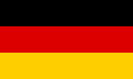
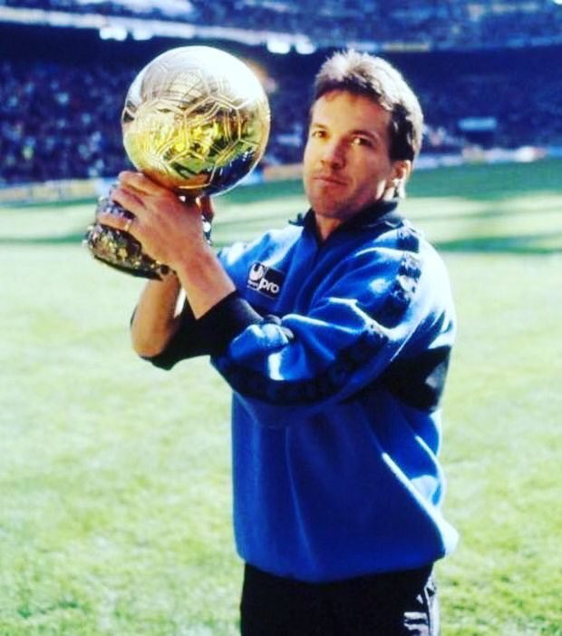
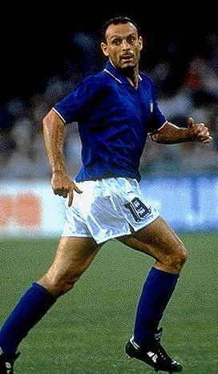
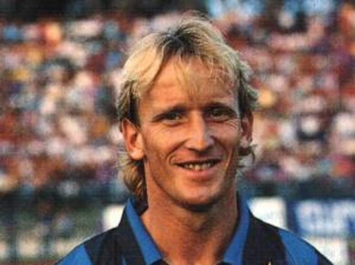

 Lothar MATTHAUS - 1990

- Année symbolique pour Matthaüs où il remporte le Ballon d'Or et la Coupe
du Monde
Considéré comme l'un des meilleurs footballeurs de sa génération
Lothar Matthäus
remporte le ballon d'or à 29 ans, en 1990.
Nationalité : Allemande
Né le 21 mars 1961, à Herzogenaurach (ALL)
Taille : 1,73
Poids : 72 kg
Poste : milieu, puis défenseur
Clubs : Herzogenaurach (1970-1979), Borussia Mönchengladbach (1979-1984), Bayern Munich (1984-1988), Inter Milan (1988-1992), Bayern Munich (1992- mars 2000), New York-New Jersey MetroStars (mai-septembre 2000).
Palmarès : Coupe du monde 1990 ; Championnat d'Europe des nations 1980 ; Coupe de l'UEFA 1991 et 1996 ; Championnat d'Allemagne 1985, 1986, 1987, 1994, 1997 et 1999 ; Championnat d'Italie 1989 ; Coupe d'Allemagne 1986 et 1998 ; Coupe de la Ligue d'Allemagne 1997, 1998 et 1999 ; Supercoupe d'Allemagne 1987.
Bilan en club : 774 matchs, 198 buts
Bilan en équipe d'Allemagne : 150 sélections A, 23 buts (1980-2000).
Bilan en phase finale de Coupe du monde : 5 participations (1er en 1990 ; 2e en 1982 et 1986), 25 matches (recordman des matches joués), 6 buts (1982-1998).
Palmarès Ballon d'Or : vainqueur en 1990(2e en 1991)
Classement du Ballon d’Or France Football 1990 :
Lothar Matthäus (Allemagne / Inter Milan),
137 pts.

Salvatore Schillaci (Italie / Juventus Turin),
84 pts.

Andreas Brehme (Allemagne / Inter Milan),
68 pts.
Retour à l'accueil